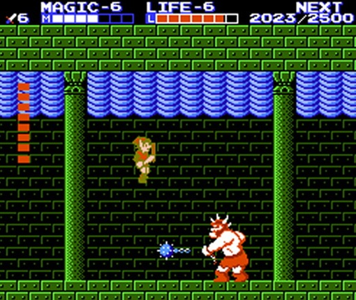

The Legend of Zelda
19 de abril de 2017
The Legend of Zelda

A franquia começa apresentando o incrível reino de Hylure, contando sobre o poderoso violão Gano, que deseja dominar o reino e que roubou a triforce do poder, enquanto isso a princesa Zelda esconde escondes os oitos fragmentos por toda a terra para que nunca chegue nas mãos de Ganon, e assim, se inicia esta imensa e divertida saga.
Legend of Zelda: The Adventure of Link

A história começa com a continuação do primeiro jogo, com a morte de Ganon, o exército das trevas está sendo liderado por Link’s Shadow, que era nada mais que uma copia do Link só que o poder maligno de Ganon.
The Legend of Zelda: A Link to the Past

O segundo jogo da saga se inicia com a morte do rei de Hylure para o feiticeiro Agahnim, que acaba aprisionando os grandes sábios no mundo das Trevas. Zelda manda uma mensagem telepática para link pedindo a sua ajuda para salva-la, e assim.
The Legend of Zelda: Link’s Awekening
Após a morte de Ganon, a paz em Hylure havia sido construída novamente, e Linnk consegue completar o seu treinamento em países estrangeiros, ele encontra uma garota chamada Marin em uma ilha que ele não sabe como foi parar. Ela devolve o seu escudo, mas ele não encontra a sua espada.
The Legend of Zelda: Ocarina of Time
A história começa na vila Kokiri, quando é chamada para ver a grande árvore e descobre que ela foi enfeitiçada por um homem de armadura preta e pede ajuda a Link para que a sua vida não seja perdida, pois sem ela a vila não iria sobreviver.
The Legend of Zelda: Majora’s Mask
A historia desse jogo se passa 3 meses após tudo o que aconteceu em Ocarina of Time, quando Link vai em busca da fada Navi que havia desaparecido, Enquanto ele a procura, ele é atacado por um ser chamado Skull Kid, que usava uma mascara chamada Majora e ele era acompanhado por duas fadas, Tael e Tatl, e assim ne inicia o jogo.
The Legend of Zelda: Oracle of Seasons e Oracle of Ages
Começa quando Link é mandado pela grande Triforce para salvar o Oraculo do Tempo da grande vilã chamada de Veran e o jogo se passa entre o grande um emocionante confronto de Zelda e e a vilã Veran.
The Legend of Zelda: A Link to the Past & Four Swords
Completando o nono jogo da série, o jogo possui um multiplayer de até quatro jogadores, seu objetivo era completar o máximo de missões possíveis e pegar todas as rubis. Em 2011 foi refeito uma edição comemoratica de 25 anos da série.
The Legend of Zelda: The Wind Walker
O décimo jogo da saga se inicia com Aryll pedindo a Link para ele testar o presente que ele havia dado a ele, quando eles avistam um navio pirata chegar na ilha de Outset, Quando de repente Link avista uma jovem presa entre as patas de uma grande ave e ele decide salva-la, e assim inicia o décimo jogo da franquia.
The Legend of Zelda: Four Swords Adventures
Se inicia novamente na terra de Hylure, quando estava todo mundo com medo pelo o que estava acontecendo. Em uma tempestade, a princesa Zelda, meio receiosa por tudo que esta acontecendo, convoca Link para protege-la e por ai percorre o jogo.
The Legend of Zelda: The Minish Cap

Este jogo conta a verdadeira história do passado e da origem de Vati, o vilão do jogo de Four Swords Adventures, e a Four Swords, que é o que faz as espada do Link se dividir em quatro cópias.
The Legend of Zelda: Twilight Princess
Este aqui diferente dos outros, ele segue alguns anos depois do que ocorreu em Ocarina of Time, mas também usando a cronologia de Majora’s Mask, com isso, ele se torna um paralelo do Wind Waker em uma linha do tempo completamente alternativa.
The Legend of Zelda: Phantom Hourglass
Os piratas do Tetra e Link estão em busca de proteger e de fazer uma nova Hylure que seja protegida pela Triforce, até encontrarem um navio fantasma que Tetra, curiosamente decide exprola-lo.
The Legend of Zelda: Spirit Tracks
Começa quando Link é mandado pela grande Triforce para salvar o Oraculo do Tempo da grande vilã chamada de Veran e o jogo se passa entre o grande um emocionante confronto de Zelda e e a vilã Veran.
The Legend of Zelda: Skyward Sword
Cronologicamente, esse jogo acontece antes da princesa Zelda se tornar princesa de Hylure, que naquela época era conhecida por uma terra perigosa e desconhecida. É uma ordem completamente confusa sinceramente está franquia, não é mesmo?
The Legend of Zelda: A Link Between Worlds
Ele é uma sequência direta do Zelda de 1991, os jogadores poderão revisitar o reino mágico de Hylure depois de mais de 20 anos, mas se tratando é claro de um novo capitulo da série e não de um remake.
The Legend of Zelda: Breath of the Wild

É um novo jogo da saga que está para ser lançado neste ano de 2017, os fãs esperam muitas expectativas em cima dele para dar mais um passo as essa imensa saga que enche os olhos de qualquer gamer.